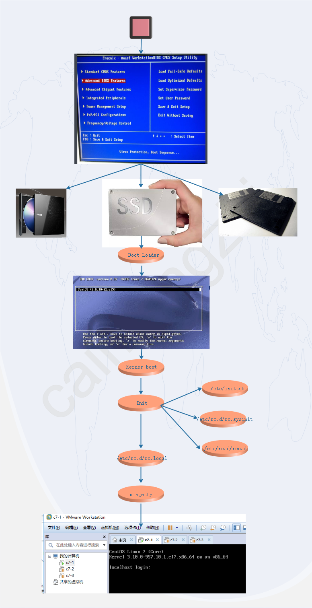

Linux 启动
1. 介绍¶
Linux系统的启动过程并不是大家想象中的那么复杂，其过程可以分为5个阶段：
- 内核的引导。
- 运行 init。
- 系统初始化。
- 建立终端 。
- 用户登录系统。
注意
init程序的类型： SysV: init, CentOS 5之前, 配置文件： /etc/inittab。 Upstart: init,CentOS 6, 配置文件： /etc/inittab, /etc/init/*.conf。 Systemd： systemd, CentOS 7,配置文件： /usr/lib/systemd/system、 /etc/systemd/system。
2. 内核引导¶
当计算机打开电源后，首先是BIOS开机自检，按照BIOS中设置的启动设备（通常是硬盘）来启动。
操作系统接管硬件以后，首先读入 /boot 目录下的内核文件。
操作系统 --》 /boot
3. 运行init¶
init 进程是系统所有进程的起点，你可以把它比拟成系统所有进程的老祖宗，没有这个进程，系统中任何进程都不会启动。
init 程序首先是需要读取配置文件 /etc/inittab。
操作系统 --》 /boot --》 init
4. 运行级别¶
运行级别，许多程序需要开机启动。它们在Windows叫做"服务"（service），在Linux就叫做"守护进程"（daemon）。
init进程的一大任务，就是去运行这些开机启动的程序。但是，不同的场合需要启动不同的程序，比如用作服务器时，需要启动Apache，用作桌面就不需要。
Linux允许为不同的场合，分配不同的开机启动程序，这就叫做"运行级别"（runlevel）。也就是说，启动时根据"运行级别"，确定要运行哪些程序。
操作系统 --》 /boot --》 init --》 运行级别
运行级别
Linux系统有7个运行级别(runlevel)： 运行级别0：系统停机状态，系统默认运行级别不能设为0，否则不能正常启动 运行级别1：单用户工作状态，root权限，用于系统维护，禁止远程登陆 运行级别2：多用户状态(没有NFS) 运行级别3：完全的多用户状态(有NFS)，登陆后进入控制台命令行模式 运行级别4：系统未使用，保留 运行级别5：X11控制台，登陆后进入图形GUI模式 运行级别6：系统正常关闭并重启，默认运行级别不能设为6，否则不能正常启动
5. 系统初始化¶
- centos6
在init的配置文件中有这么一行： si::sysinit:/etc/rc.d/rc.sysinit 它调用执行了/etc/rc.d/rc.sysinit，而rc.sysinit是一个bash shell的脚本，它主要是完成一些系统初始化的工作，rc.sysinit是每一个运行级别都要首先运行的重要脚本。
它主要完成的工作有：激活交换分区，检查磁盘，加载硬件模块以及其它一些需要优先执行任务。
- centos7
[root@localhost srv]# cat /etc/inittab # inittab is no longer used when using systemd. # # ADDING CONFIGURATION HERE WILL HAVE NO EFFECT ON YOUR SYSTEM. # # Ctrl-Alt-Delete is handled by /usr/lib/systemd/system/ctrl-alt-del.target # # systemd uses 'targets' instead of runlevels. By default, there are two main targets: # # multi-user.target: analogous to runlevel 3 # graphical.target: analogous to runlevel 5 # # To view current default target, run: # systemctl get-default # # To set a default target, run: # systemctl set-default TARGET.target # [root@localhost srv]# systemctl get-default multi-user.target
# multi-user.target类似于runlevel 3; # graphical.target类似于runlevel5 #查看默认运行级别的方式为 systemctl get-default #设置默认运行级别的方式 systemctl set-default TARGET.target
操作系统 --》 /boot --》 init --》 运行级别 --》 /ec/init.d
6. 建立终端¶
这时基本系统环境已经设置好了，各种守护进程也已经启动了。
7. 用户登录系统¶
一般来说，用户的登录方式有三种：
- 命令行登录
- ssh登录
- 图形界面登录
操作系统 --》 /boot --》 init --》 运行级别 --》 /ec/init.d --》 用户登录
对于运行级别为5的图形方式用户来说，他们的登录是通过一个图形化的登录界面。登录成功后可以直接进入 KDE、Gnome 等窗口管理器。
而本文主要讲的还是文本方式登录的情况：当我们看到mingetty的登录界面时，我们就可以输入用户名和密码来登录系统了。
Linux 的账号验证程序是 login，login 会接收 mingetty 传来的用户名作为用户名参数。然后 login 会对用户名进行分析：如果用户名不是 root，且存在 /etc/nologin 文件，login 将输出 nologin 文件的内容，然后退出。
这通常用来系统维护时防止非root用户登录。只有/etc/securetty中登记了的终端才允许 root 用户登录，如果不存在这个文件，则 root 用户可以在任何终端上登录。/etc/usertty文件用于对用户作出附加访问限制，如果不存在这个文件，则没有其他限制。
8. 模式切换¶
图形模式与文字模式的切换方式。Linux预设提供了六个命令窗口终端机让我们来登录。
默认我们登录的就是第一个窗口，也就是tty1，这个六个窗口分别为tty1,tty2 … tty6，你可以按下Ctrl + Alt + F1 ~ F6 来切换它们。
如果你安装了图形界面，默认情况下是进入图形界面的，此时你就可以按Ctrl + Alt + F1 ~ F6来进入其中一个命令窗口界面。
当你进入命令窗口界面后再返回图形界面只要按下Ctrl + Alt + F7 就回来了。
如果你用的vmware 虚拟机，命令窗口切换的快捷键为 Alt + Space + F1~F6. 如果你在图形界面下请按Alt + Shift + Ctrl + F1~F6 切换至命令窗口。
操作系统 --》 /boot --》 init --》 运行级别 --》 /ec/init.d --》 用户登录 --》 Login shell
9. 关机¶
在linux领域内大多用在服务器上，很少遇到关机的操作。毕竟服务器上跑一个服务是永无止境的，除非特殊情况下，不得已才会关机。
正确的关机流程为：sync > shutdown > reboot > halt
关机指令为：shutdown ，你可以man shutdown 来看一下帮助文档。
例如你可以运行如下命令关机：
sync 将数据由内存同步到硬盘中。 shutdown 关机指令，你可以man shutdown 来看一下帮助文档。例如你可以运行如下命令关机： shutdown –h 10 ‘This server will shutdown after 10 mins’ 这个命令告诉大家，计算机将在10分钟后关机，并且会显示在登陆用户的当前屏幕中。 shutdown –h now 立马关机 shutdown –h 20:25 系统会在今天20:25关机 shutdown –h +10 十分钟后关机 shutdown –r now 系统立马重启 shutdown –r +10 系统十分钟后重启 reboot 就是重启，等同于 shutdown –r now halt 关闭系统，等同于shutdown –h now 和 poweroff
，不管是重启系统还是关闭系统，首先要运行 sync 命令，把内存中的数据写到磁盘中。
关机的命令有 shutdown –h now halt poweroff 和 init 0 , 重启系统的命令有 shutdown –r now reboot init 6。
关机
shutdown 会给系统计划一个时间关机。它可以被用于停止、关机、重启机器。shutdown 会给系统计划一个时间关机。它可以被用于停止、关机、重启机器。 shutdown -p now ### 关闭机器 shutdown -H now ### 停止机器 shutdown -r09:35 ### 在 09:35am 重启机器 要取消即将进行的关机，只要输入下面的命令： shutdown -c halt 命令通知硬件来停止所有的 CPU 功能，但是仍然保持通电。你可以用它使系统处于低层维护状态。注意在有些情况会它会完全关闭系统。 halt ### 停止机器 halt -p ### 关闭机器 halt --reboot ### 重启机器 poweroff 会发送一个 ACPI 信号来通知系统关机。 poweroff ### 关闭机器 poweroff --halt ### 停止机器 poweroff --reboot ### 重启机器 reboot 命令 reboot 通知系统重启 reboot ### 重启机器 reboot --halt ### 停止机器 reboot -p ### 关闭机器

详细流程
启动第一步－－加载BIOS 当你打开计算机电源，计算机会首先加载BIOS信息，BIOS信息是如此的重要，以至于计算机必须在最开始就找到它。这是因为BIOS中包含了CPU的相关信息、设备启动顺序信息、硬盘信息、内存信息、时钟信息、PnP特性等等。在此之后，计算机心里就有谱了，知道应该去读取哪个硬件设备了。 启动第二步－－读取MBR 众所周知，硬盘上第0磁道第一个扇区被称为MBR，也就是Master Boot Record，即主引导记录，它的大小是512字节，别看地方不大，可里面却存放了预启动信息、分区表信息。 系统找到BIOS所指定的硬盘的MBR后，就会将其复制到0×7c00地址所在的物理内存中。其实被复制到物理内存的内容就是Boot Loader，而具体到你的电脑，那就是lilo或者grub了。 启动第三步－－Boot Loader Boot Loader 就是在操作系统内核运行之前运行的一段小程序。通过这段小程序，我们可以初始化硬件设备、建立内存空间的映射图，从而将系统的软硬件环境带到一个合适的状态，以便为最终调用操作系统内核做好一切准备。 Boot Loader有若干种，其中Grub、Lilo和spfdisk是常见的Loader。 我们以Grub为例来讲解吧，毕竟用lilo和spfdisk的人并不多。 系统读取内存中的grub配置信息（一般为menu.lst或grub.lst），并依照此配置信息来启动不同的操作系统。 启动第四步－－加载内核 根据grub设定的内核映像所在路径，系统读取内存映像，并进行解压缩操作。此时，屏幕一般会输出“Uncompressing Linux”的提示。当解压缩内核完成后，屏幕输出“OK, booting the kernel”。 系统将解压后的内核放置在内存之中，并调用start_kernel()函数来启动一系列的初始化函数并初始化各种设备，完成Linux核心环境的建立。至此，Linux内核已经建立起来了，基于Linux的程序应该可以正常运行了。 启动第五步－－用户层init依据inittab文件来设定运行等级 内核被加载后，第一个运行的程序便是/sbin/init，该文件会读取/etc/inittab文件，并依据此文件来进行初始化工作。 其实/etc/inittab文件最主要的作用就是设定Linux的运行等级，其设定形式是“：id:5:initdefault:”，这就表明Linux需要运行在等级5上。Linux的运行等级设定如下： 0：关机 1：单用户模式 2：无网络支持的多用户模式 3：有网络支持的多用户模式 4：保留，未使用 5：有网络支持有X-Window支持的多用户模式 6：重新引导系统，即重启 关于/etc/inittab文件的学问，其实还有很多 启动第六步－－init进程执行rc.sysinit 在设定了运行等级后，Linux系统执行的第一个用户层文件就是/etc/rc.d/rc.sysinit脚本程序，它做的工作非常多，包括设定PATH、设定网络配置（/etc/sysconfig/network）、启动swap分区、设定/proc等等。如果你有兴趣，可以到/etc/rc.d中查看一下rc.sysinit文件，里面的脚本够你看几天的 启动第七步－－启动内核模块 具体是依据/etc/modules.conf文件或/etc/modules.d目录下的文件来装载内核模块。 启动第八步－－执行不同运行级别的脚本程序 根据运行级别的不同，系统会运行rc0.d到rc6.d中的相应的脚本程序，来完成相应的初始化工作和启动相应的服务。 启动第九步－－执行/etc/rc.d/rc.local 你如果打开了此文件，里面有一句话，读过之后，你就会对此命令的作用一目了然： # This script will be executed *after* all the other init scripts. # You can put your own initialization stuff in here if you don’t # want to do the full Sys V style init stuff. rc.local就是在一切初始化工作后，Linux留给用户进行个性化的地方。你可以把你想设置和启动的东西放到这里。 启动第十步－－执行/bin/login程序，进入登录状态 此时，系统已经进入到了等待用户输入username和password的时候了，你已经可以用自己的帐号登入系统了。